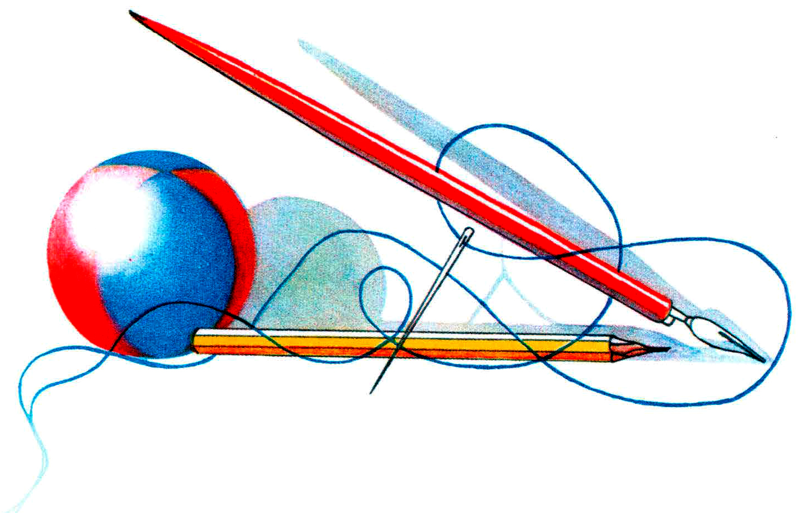
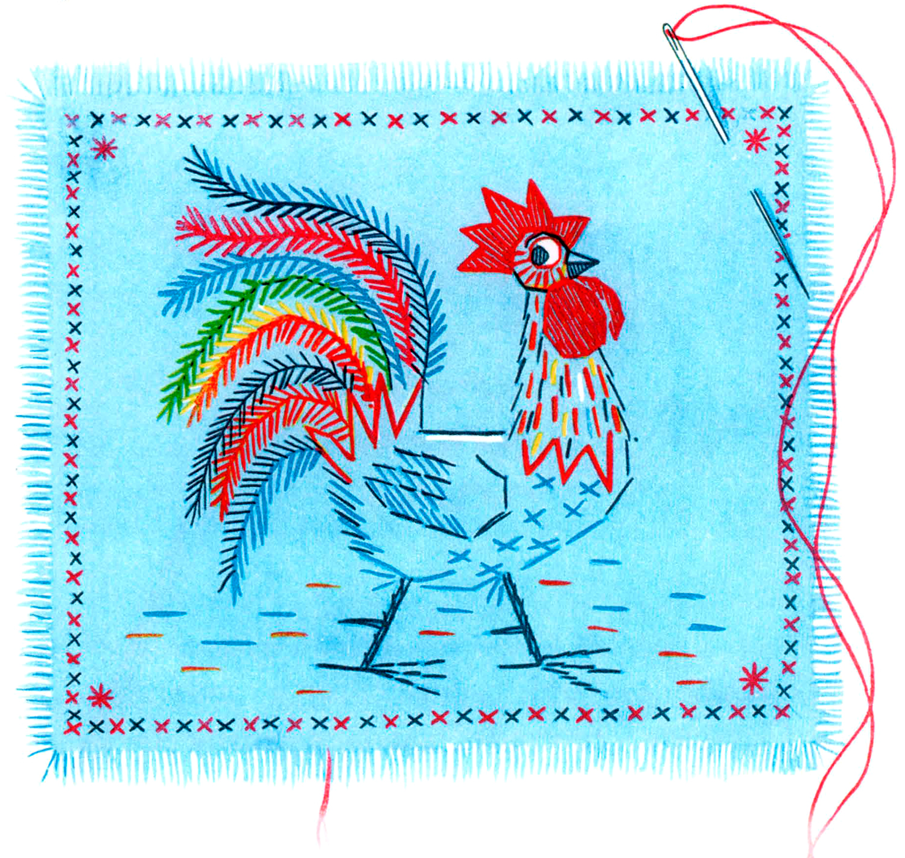
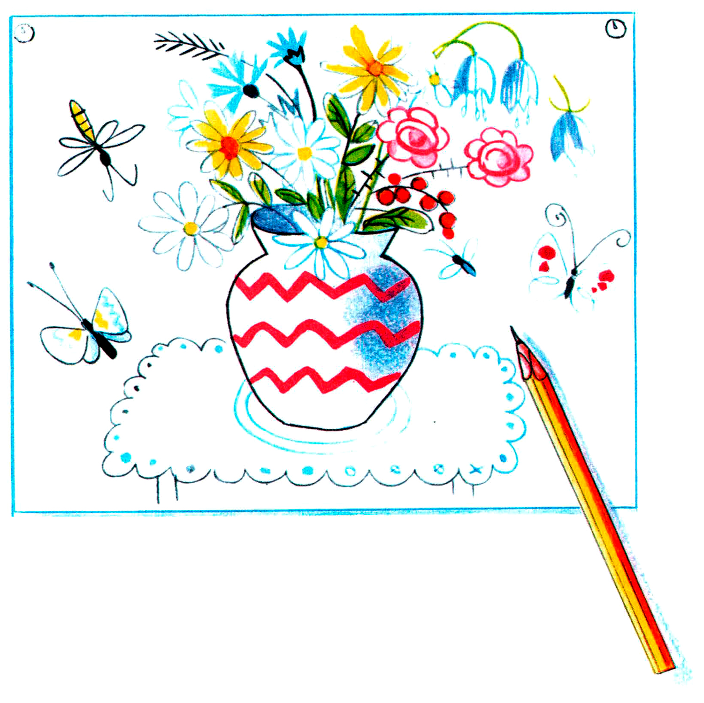
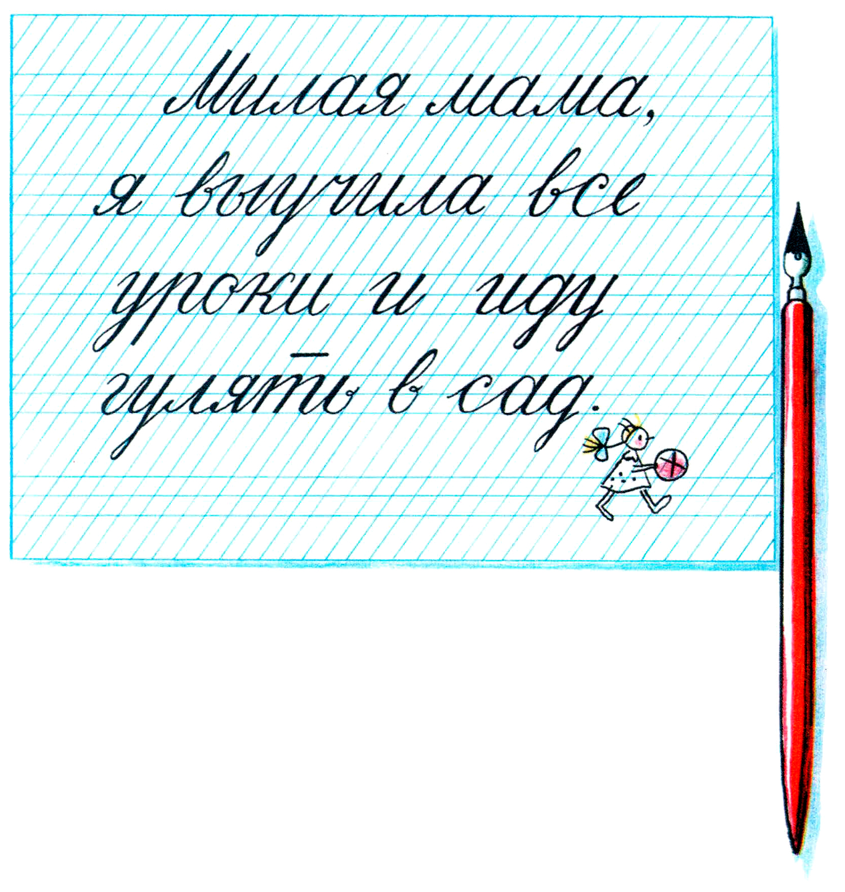
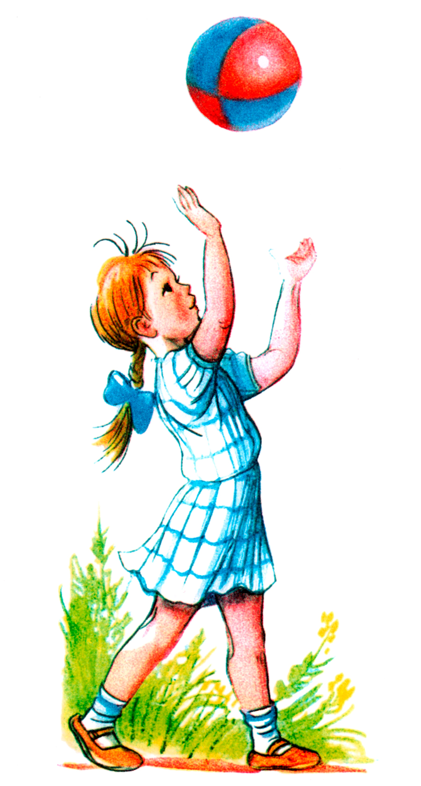

Умелые руки

Поспорили как-то между собой Иголка, Карандаш, Ручка и Мячик, кто из них лучше.
— Я всех лучше! – сказала Иголка. – Посмотрите, какая я острая…
— Нет, это я всех лучше! – сказал Карандаш. – Я деревянный, и на мне золотыми буквами написано: «Пионер».
— Я гораздо лучше! – крикнула Ручка. – Я вся из прекрасной пластмассы, а перо у меня блестит, как серебро.
Мячик ничего не сказал, но все поняли, что он тоже считал себя лучше всех.
Долго они спорили, кричали и так и не могли решить, кто же из них всех лучше.
И вдруг пришли Умелые Руки.
— Здравствуй, моя милая Иголочка! – сказали Умелые Руки.
Взяли Иголку, продели ей в ушко яркую нитку и на кусочке полотна вышили крестиком вот такого петушка:

— Вот видите, какая я мастерица! – гордо сказала Иголка. – Я вам говорила!..
Приуныли Карандаш, Ручка и Мячик – правда, петушок был очень красив.
— Здравствуй, дорогой мой Карандашик! – сказали Умелые Руки.
Взяли Карандаш, листочек бумаги и скоро-скоро нарисовали вот такую картинку:

— Смотрите, смотрите, какой я молодец! – хвастливо сказал Карандаш. – Ну кто скажет, что я не художник!
Ручка и Мячик от зависти ничего не могли сказать, только одна Иголка презрительно тряхнула своей ниткой и прошептала:
— Подумаешь, художник! Вышивать-то труднее…
А Умелые Руки взяли Ручку, обмакнули перышко в чернила и написали красивыми буквами:

Обрадовалась Ручка:
— Конечно, я всех лучше! Ну кто, кроме меня, так красиво напишет!
Тут все согласились, что Ручка хорошо написала и что записка не хуже петушка и картинки. Только Мячик обиделся, надулся и ничего не сказал, но все поняли, что он теперь не считает себя лучше других.
И всем даже жалко его стало.
Вдруг Умелые Руки взяли Мячик и пошли с ним в сад, и Мячик весело запрыгал высоко-высоко!

— Вот как я умею! Вот как я прыгаю! Вот как! Вот как! – радостно закричал Мячик.
Пришла мама.
Она полюбовалась вышитым петушком, картинкой, прочитала записку и выглянула в окно – там Умелые Руки играли Мячиком. Мама улыбнулась и сказала:
— Славная моя дочка – Умелые Руки!